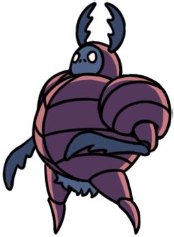

O ambiente mais nojento do jogo. Todos os restos da cidade despejados em um lugar, junto com a infecção, criando abominações que não deveriam existir, mas se esconedem no fundo do esgoto. Os pingos da água verde junto com a ambientação e ecos causam um desconforto único, junto a uma voz que parece ser amigavel.
O ambiente mais nojento do jogo. Todos os restos da cidade despejados em um lugar, junto com a infecção, criando abominações que não deveriam existir, mas se esconedem no fundo do esgoto. Os pingos da água verde junto com a ambientação e ecos causam um desconforto único, junto a uma voz que parece ser amigavel.
"Oh, é você de novo. Fico feliz em ver que você está de volta.
Não, não, por favor... Não diga uma palavra. Eu devo pedir desculpas pelo meu comportamento anterior.
A culpa foi minha. Eu te confundi com um daqueles saqueadores estúpidos, mas você me derrotou de maneira mais cavaleiresca e majestosa possível."
- Defensor do Esterco